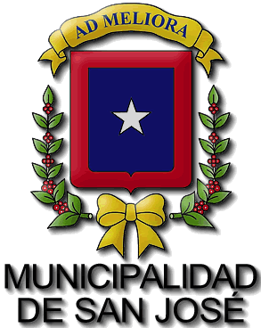

Byron Navarro Salazar
Biografía
El 26 de mayo de 1995, nací, en San Jose, Costa Rica. Viví en Curridabat, rodeado de personas interesantes y conviviendo lo mejor que podia, lleno de metas y optimismo visualize mi futuro.
Comencé mis estudios en la Escuela Centro America, pase tres años en el Liceo de Curridabat y por ultimo saque mi bachillerato y el tecnico medio en Contabilidad. Tuve la gran oportunidad de ser parte de la Segunda Generacion de estudiantes del Centro Tecnologico y Artes Visuales, donde me prepare como Diseñador y Desarrollador Web. El mismo periodo de tiempo estudie Ingles por parte del INA y me prepare como un gran estudiante en busca de mi profesión.
Como todas las personas, tenia metas para mi futuro, tomando en cuenta mi familia y amigos, me considero una persona sociable, profesional en lo que hago y me propongo hacer, no busco ser el mejor pero si uno de ellos.
Experiencia Laboral

- 